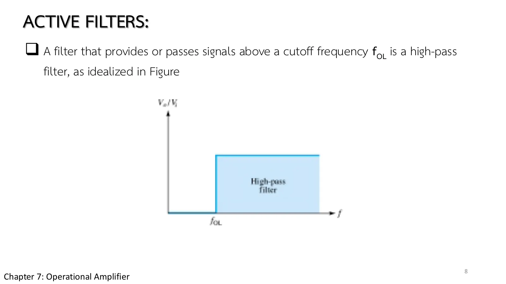
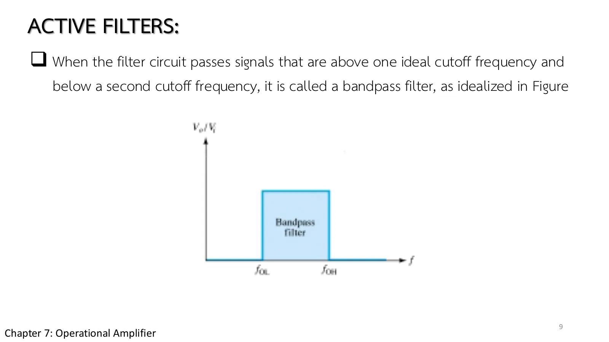
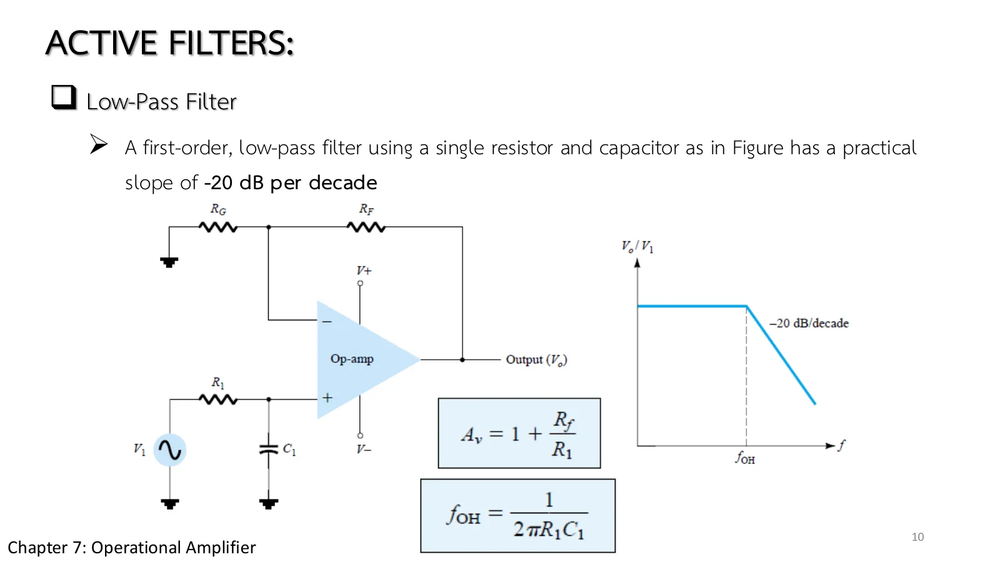
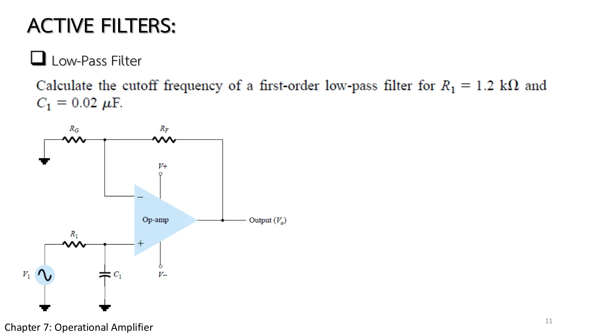
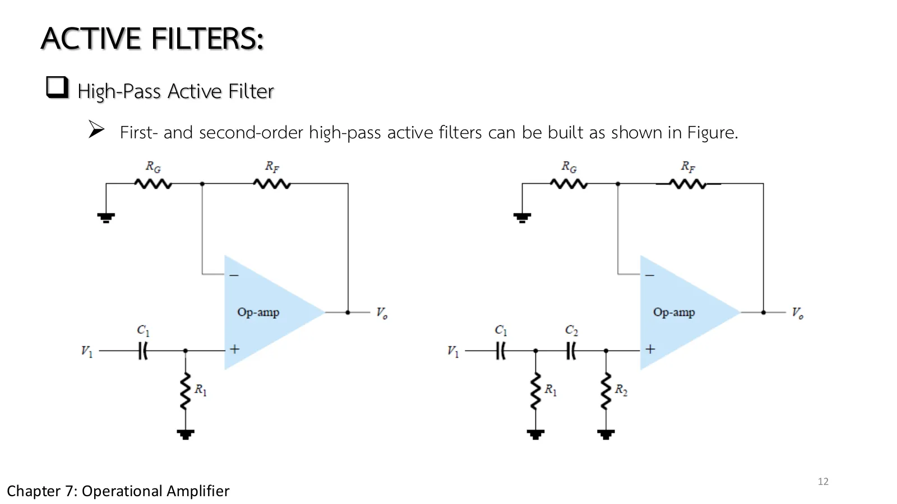
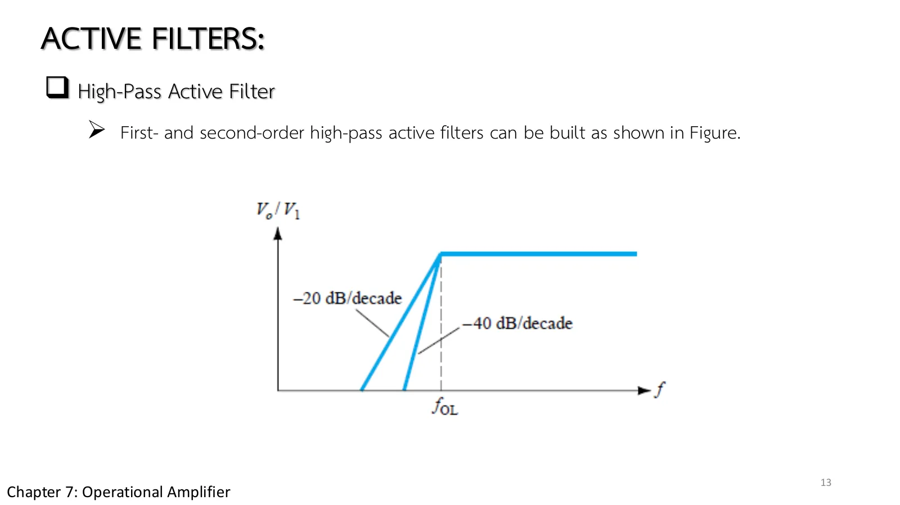
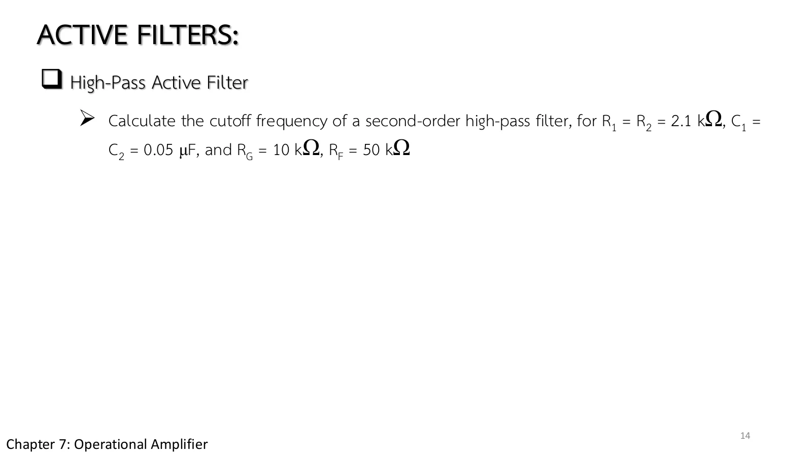
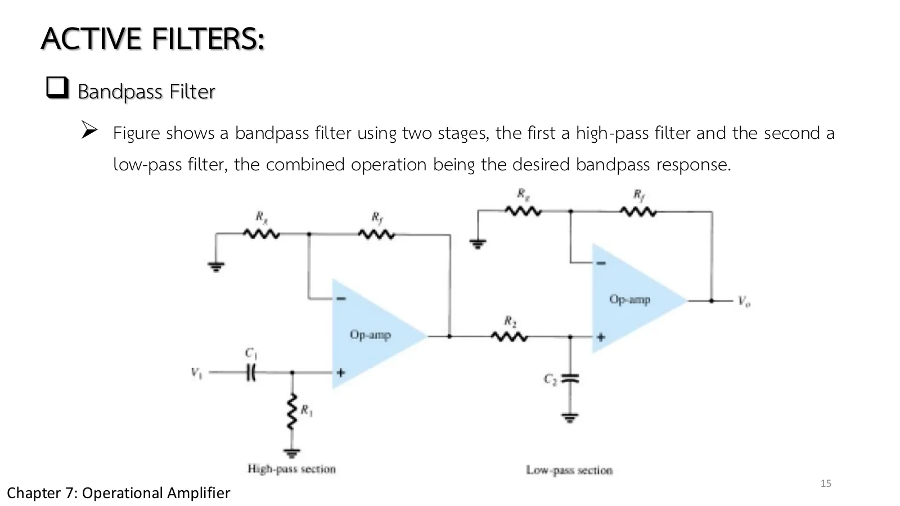
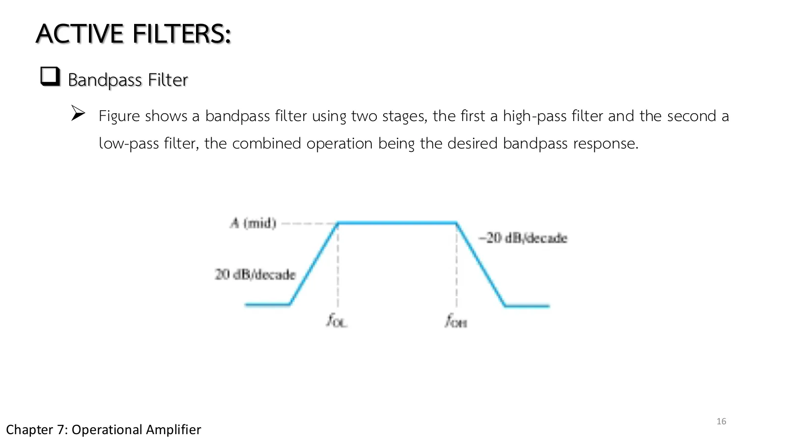
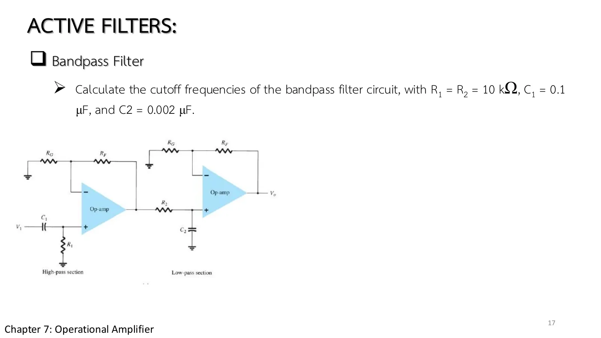

ตัวกรองแอกทีฟ Active filters
Active filters An RC section sets the cutoff, the op-amp adds gain and keeps the next stage from loading it
ปุ่มเสียงทุ้มและเสียงแหลมของเครื่องเสียง วงจรที่ตัดความถี่สูงทิ้งก่อนสัญญาณเข้าตัวแปลงแอนะล็อกเป็นดิจิทัลในหน้า 8.2 และวงจรแบ่งความถี่ไปลำโพงเสียงทุ้มกับเสียงแหลม ล้วนทำสิ่งเดียวกัน: เลือกเก็บบางความถี่ ทิ้งบางความถี่ ตัวกรองแอกทีฟ (active filter) ทำงานนี้ด้วยตัวต้านทาน ตัวเก็บประจุ และออปแอมป์ที่ช่วยขยายและแยกขั้นออกจากกัน หน้านี้เริ่มจากตัวกรองในอุดมคติ แล้วสร้างผ่านต่ำ ผ่านสูง และผ่านแถบ พร้อมกราฟโบเดที่ตัวแก้วงจรกวาดความถี่จริง (สไลด์บทที่ 7 ชุดที่ 2 หน้า 7–17 · Boylestad หัวข้อ 11.6)
The bass and treble knobs of a stereo, the circuit that strips high frequencies before a signal enters the analog-to-digital converter of page 8.2, and the crossover that splits sound between a woofer and a tweeter all do the same thing: keep some frequencies and throw others away. An active filter does it with resistors, capacitors and an op-amp that adds gain and keeps the stages apart. This page starts with ideal filters, then builds low-pass, high-pass and band-pass ones, with Bode plots from a real frequency sweep of the engine (chapter 7 slides, set 2, pp. 7–17; Boylestad section 11.6).
ประเด็นสำคัญของหน้านี้
- สามแบบในอุดมคติ (หน้า 7–9, รูป 11.30): ผ่านต่ำ ผ่านสูง ผ่านแถบ ตัวกรองจริงไม่ตัดขาด แต่ลาดลงเป็นเดซิเบลต่อทศ: อัตราขยายเป็น dB = 20 log|V_o/V_1| และที่ความถี่ตัดอัตราขยายลด 3 dB (เหลือ 1/√2)
- ผ่านต่ำอันดับหนึ่ง (หน้า 10–11, รูป 11.31, สมการ 11.13–11.14): \(R_1C_1\) เป็นตัวแบ่งแรงดันก่อนขั้ว + ขาออกถูกขยาย \(A_v = 1 + R_F/R_G\) (วงจรไม่กลับเฟส) \(f_{OH} = 1/2\pi R_1C_1\) ลาด −20 dB/ทศ Example 11.12: 6.63 kHz · ต่อสองชุด (รูป 11.32) ได้ −40 dB/ทศ
- ผ่านสูง (หน้า 12–14, รูป 11.33, สมการ 11.15): สลับ R กับ C ของชุด \(f_{OL}\) สูตรเดียวกัน Example 11.13: \(A_v\) = 6, \(f_{OL}\) ≈ 1.5 kHz
- ข้อค้นพบ: ชุด RC สองชุดที่ต่อตรงกัน (รูป 11.32, 11.33b) ชุดที่สองโหลดชุดแรก ฟังก์ชันถ่ายโอนเป็น \(x^2/(x^2 + 3x + 1)\) ไม่ใช่ \((x/(x+1))^2\): ที่ \(f_{OL}\) ตามสูตรอัตราขยายเหลือ 1/3 (−9.5 dB) และจุด −3 dB จริงอยู่ที่ 2.67\(f_{OL}\) (ผ่านต่ำ: 0.37\(f_{OH}\)) สูตรของตำราบอกแค่จุดตัดของเส้นกำกับ ตัวกรองอันดับสองที่ความถี่ตัดตรงสูตรใช้โครงสร้าง Sallen–Key
- ผ่านแถบ (หน้า 15–17, รูป 11.34): ผ่านสูงอันดับหนึ่งแล้วต่อด้วยผ่านต่ำอันดับหนึ่ง ออปแอมป์ตัวแรกมีความต้านทานขาออกต่ำ จึงไม่ถูกขั้นที่สองโหลด การตอบสนองเป็นผลคูณ Example 11.14: 159.15 Hz ถึง 7.96 kHz
Key points of this page
- The three ideal shapes (pp. 7–9, Fig. 11.30): low-pass, high-pass, bandpass. Real filters do not cut off sharply but roll off in decibels per decade: the gain in dB is 20 log|V_o/V_1|, and at the cutoff it is 3 dB down (1/√2).
- First-order low-pass (pp. 10–11, Fig. 11.31, Eqs. 11.13–11.14): \(R_1C_1\) is a divider in front of the + input; the output is amplified by \(A_v = 1 + R_F/R_G\) (a noninverting amplifier); \(f_{OH} = 1/2\pi R_1C_1\), −20 dB/decade. Example 11.12: 6.63 kHz. Two sections (Fig. 11.32) give −40 dB/decade.
- High-pass (pp. 12–14, Fig. 11.33, Eq. 11.15): swap the R and C of the section; the same formula for \(f_{OL}\). Example 11.13: \(A_v\) = 6, \(f_{OL}\) ≈ 1.5 kHz.
- A finding: two RC sections connected directly (Figs. 11.32, 11.33b) load each other; the transfer function is \(x^2/(x^2 + 3x + 1)\), not \((x/(x+1))^2\): at the formula's \(f_{OL}\) the gain is down to 1/3 (−9.5 dB), and the actual −3 dB point is at 2.67\(f_{OL}\) (low-pass: 0.37\(f_{OH}\)). The book's formula marks only where the asymptotes meet; a second-order filter whose cutoff matches it uses the Sallen–Key structure.
- Bandpass (pp. 15–17, Fig. 11.34): a first-order high-pass followed by a first-order low-pass. The first op-amp's low output resistance keeps the second stage from loading it, so the response is the product. Example 11.14: 159.15 Hz to 7.96 kHz.
ตัวกรองสามแบบในอุดมคติ
Three ideal filters
ตัวกรองสร้างได้จาก R กับ C อย่างเดียว ตัวกรองแอกทีฟเพิ่มวงจรขยายเข้าไปเพื่อให้อัตราขยายและกันขั้นต่าง ๆ ไม่ให้โหลดกัน (สไลด์หน้า 7) ตัวกรองผ่านต่ำในอุดมคติปล่อยทุกอย่างตั้งแต่ไฟตรงถึงความถี่ตัด \(f_{OH}\) แล้วตัดเหนือจากนั้นทิ้งหมด ผ่านสูงทำกลับกันเหนือ \(f_{OL}\) (สไลด์หน้า 8) ผ่านแถบปล่อยเฉพาะช่วงระหว่างสองความถี่ตัด (สไลด์หน้า 9)
ตัวกรองจริงไม่ตัดเป็นหน้าผา แต่ลาดลงเป็นเดซิเบลต่อทศวรรษ และที่ความถี่ตัดอัตราขยายลดลง 3 dB หรือเหลือ \(1/\sqrt2\)
A filter can be made of R and C alone; an active filter adds an amplifier for gain and to keep the stages from loading each other (slide p. 7). An ideal low-pass filter passes everything from dc up to the cutoff \(f_{OH}\) and nothing above it; a high-pass does the opposite above \(f_{OL}\) (slide p. 8); a band-pass passes only the range between two cutoffs (slide p. 9).
Real filters do not cut like a cliff: they slope off in decibels per decade, and at the cutoff the gain is 3 dB down, \(1/\sqrt2\) of its passband value.



↓ ส่วน A: เลือกตัวกรองห้าแบบ แล้วดูกราฟโบเดว่าลาดลงกี่เดซิเบลต่อทศวรรษ
↓ Section A: pick one of five filters and read from the Bode plot how many decibels per decade it falls
ตัวกรองห้าแบบที่ปรับได้ กับกราฟโบเดจากตัวแก้วงจร
Five adjustable filters, with Bode plots from the engine
เลือกตัวกรอง ตั้งความถี่ของสัญญาณ \(f\) และค่า R, C, \(R_G\), \(R_F\) วงจรทำงานที่ความถี่นั้น (จุดวิ่งสลับทิศ) กราฟล่างซ้ายคือขนาดเป็นเดซิเบลเทียบความถี่: เส้นทึบจากตัวแก้วงจร เส้นประคือเส้นกำกับของตำรา (−20 หรือ −40 dB ต่อทศจากความถี่ตัดตามสูตร) และเส้นม่วงคือจุด −3 dB จริง กราฟล่างขวาคือ \(v_1\), \(v_o\) ตามเวลา ลองผ่านสูงอันดับสอง: ที่ \(f_{OL}\) ตามสูตรอัตราขยายเหลือ 1/3 ไม่ใช่ 1/√2
Choose a filter, set the signal frequency \(f\) and the values of R, C, \(R_G\), \(R_F\). The circuit runs at that frequency (the dots reverse). The lower left graph is the magnitude in decibels against frequency: the solid line from the engine, the dashed line the book's asymptote (−20 or −40 dB per decade from the formula's cutoff), and the purple line the actual −3 dB point. The lower right graph shows \(v_1\) and \(v_o\) in time. Try the second-order high-pass: at the formula's \(f_{OL}\) the gain is down to 1/3, not 1/√2.
RC หนึ่งชุด กับวงจรไม่กลับเฟส
One RC pair and a noninverting amplifier
สไลด์หน้า 10 วาง \(R_1\) กับ \(C_1\) เป็นตัวแบ่งแรงดันหน้าขั้ว + ความถี่ยิ่งสูง \(C_1\) ยิ่งลัดสัญญาณลงกราวด์ ออปแอมป์แบบไม่กลับเฟสขยายสิ่งที่เหลือด้วย \(A_v = 1 + R_F/R_G\) ความถี่ตัดคือ \(f_{OH} = 1/2\pi R_1C_1\) และเหนือจากนั้นลาดลง −20 dB ต่อทศวรรษ
สไลด์หน้า 11 ให้ \(R_1\) = 1.2 kΩ และ \(C_1\) = 0.02 µF ก่อนเปิดเฉลย ลองเดาว่าความถี่ตัดอยู่หลักเฮิรตซ์ หลักร้อย หรือหลักพันเฮิรตซ์
Slide p. 10 places \(R_1\) and \(C_1\) as a divider in front of the + input: the higher the frequency, the more \(C_1\) shorts the signal to ground. The noninverting op-amp amplifies what is left by \(A_v = 1 + R_F/R_G\). The cutoff is \(f_{OH} = 1/2\pi R_1C_1\), and above it the response falls at −20 dB per decade.
Slide p. 11 gives \(R_1\) = 1.2 kΩ and \(C_1\) = 0.02 µF. Before opening the solution, guess whether the cutoff lies in the hertz, hundreds of hertz or kilohertz.


↓ โจทย์ 1: Example 11.12 ภาพจำลองเปลี่ยนความถี่ตามขั้น
↓ Problem 1: Example 11.12, the simulation changes frequency with each step
Example 11.12: ผ่านต่ำอันดับหนึ่ง 1.2 kΩ, 0.02 µF
Example 11.12: a first-order low-pass, 1.2 kΩ, 0.02 µF
จงหาความถี่ตัดของตัวกรองผ่านต่ำอันดับหนึ่งที่มี \(R_1\) = 1.2 kΩ, \(C_1\) = 0.02 µF (ใช้ \(R_G\) = 10 kΩ, \(R_F\) = 50 kΩ)
Calculate the cutoff frequency of a first-order low-pass filter with \(R_1\) = 1.2 kΩ and \(C_1\) = 0.02 µF (with \(R_G\) = 10 kΩ, \(R_F\) = 50 kΩ).
ภาพจำลองเปลี่ยนความถี่ตามขั้น: ในแถบผ่าน ที่ \(f_{OH}\) และหนึ่งทศเหนือ ลองตอบก่อน
The simulation changes frequency with the steps: in the passband, at \(f_{OH}\), and one decade above. Try it first.
ผ่านสูง และเมื่อต่อสองชุดเรียงกัน
The high-pass, and two sections in a row
สลับตำแหน่ง R กับ C ก็ได้ตัวกรองผ่านสูง ความถี่ตัด \(f_{OL}\) ใช้สูตรเดิม (สไลด์หน้า 12) ต่อ RC สองชุดเรียงกันได้อันดับสอง ลาดชันขึ้นเป็น −40 dB ต่อทศวรรษ (สไลด์หน้า 13) สไลด์หน้า 14 ให้โจทย์อันดับสองที่มี \(R_1 = R_2\) = 2.1 kΩ และ \(C_1 = C_2\) = 0.05 µF
แต่ต้องระวัง: สองชุดที่ต่อตรงกันโดยไม่มีออปแอมป์คั่นจะโหลดกันเอง จุด −3 dB จริงจึงไม่อยู่ที่สูตร \(1/2\pi R_1C_1\) ภาพจำลองในขั้นที่ 3 ของโจทย์จะชี้ให้เห็นว่ามันไปอยู่ที่ไหน
Swap R and C and you get a high-pass filter, its cutoff \(f_{OL}\) given by the same formula (slide p. 12). Two RC sections in a row make it second order, with a steeper −40 dB per decade (slide p. 13). Slide p. 14 sets a second-order problem with \(R_1 = R_2\) = 2.1 kΩ and \(C_1 = C_2\) = 0.05 µF.
Beware, though: two sections joined directly, with no op-amp between them, load each other, so the true −3 dB point is not at the formula \(1/2\pi R_1C_1\). Step 3 of the problem shows where it really is.



↓ โจทย์ 2: Example 11.13 แล้วดูจุด −3 dB ของวงจรจริง
↓ Problem 2: Example 11.13, then the −3 dB point of the real circuit
Example 11.13: ผ่านสูงอันดับสอง 2.1 kΩ, 0.05 µF
Example 11.13: a second-order high-pass, 2.1 kΩ, 0.05 µF
จงหาความถี่ตัดของตัวกรองผ่านสูงอันดับสอง (รูป 11.33b) ที่มี \(R_1 = R_2\) = 2.1 kΩ, \(C_1 = C_2\) = 0.05 µF, \(R_G\) = 10 kΩ, \(R_F\) = 50 kΩ
Calculate the cutoff frequency of a second-order high-pass filter (Fig. 11.33b) with \(R_1 = R_2\) = 2.1 kΩ, \(C_1 = C_2\) = 0.05 µF, \(R_G\) = 10 kΩ and \(R_F\) = 50 kΩ.
ขั้นที่ 3 แสดงว่าวงจรจริงให้จุด −3 dB ที่ไหน ลองตอบก่อน
Step 3 shows where the actual circuit puts its −3 dB point. Try it first.
ผ่านสูงตามด้วยผ่านต่ำ
A high-pass followed by a low-pass
สไลด์หน้า 15 สร้างตัวกรองผ่านแถบจากสองขั้น: ขั้นแรกผ่านสูง ขั้นที่สองผ่านต่ำ ครั้งนี้มีออปแอมป์คั่นกลาง ขาออกที่มีความต้านทานต่ำของขั้นแรกจึงไม่ถูกขั้นที่สองโหลด การตอบสนองทั้งหมดเป็นผลคูณของสองขั้นพอดี: อัตราขยายกลางแถบ \(A_{mid}\) ระหว่าง \(f_{OL}\) กับ \(f_{OH}\) และลาด 20 dB ต่อทศวรรษทั้งสองข้าง (สไลด์หน้า 16)
สไลด์หน้า 17 ให้ \(R_1 = R_2\) = 10 kΩ, \(C_1\) = 0.1 µF และ \(C_2\) = 0.002 µF ตัวเก็บประจุต่างกันห้าสิบเท่า ลองเดาก่อนว่าแถบผ่านจะกว้างกี่ทศวรรษ
Slide p. 15 builds a band-pass filter from two stages: a high-pass first, a low-pass second. This time an op-amp stands between them, so the low output resistance of the first stage is not loaded by the second, and the overall response is exactly the product of the two: a mid-band gain \(A_{mid}\) between \(f_{OL}\) and \(f_{OH}\), with 20 dB per decade slopes on both sides (slide p. 16).
Slide p. 17 gives \(R_1 = R_2\) = 10 kΩ, \(C_1\) = 0.1 µF and \(C_2\) = 0.002 µF. The capacitors differ fifty times: guess first how many decades wide the passband will be.



↓ โจทย์ 3: Example 11.14 สองความถี่ตัด
↓ Problem 3: Example 11.14, the two cutoffs
Example 11.14: ผ่านแถบ 159 Hz – 7.96 kHz
Example 11.14: a bandpass, 159 Hz to 7.96 kHz
จงหาความถี่ตัดทั้งสองของตัวกรองผ่านแถบรูป 11.34 ที่มี \(R_1 = R_2\) = 10 kΩ, \(C_1\) = 0.1 µF, \(C_2\) = 0.002 µF (ออปแอมป์ทั้งสองใช้ \(R_G\) = 10 kΩ, \(R_F\) = 50 kΩ)
Calculate the cutoff frequencies of the bandpass filter of Fig. 11.34 with \(R_1 = R_2\) = 10 kΩ, \(C_1\) = 0.1 µF and \(C_2\) = 0.002 µF (both op-amps with \(R_G\) = 10 kΩ, \(R_F\) = 50 kΩ).
วงจรกว้าง: สองขั้นเรียงกัน ลองตอบก่อน
A wide circuit: the two stages side by side. Try it first.
ฝึกเพิ่ม
More practice
ลองทำดู 1 — ส่วน A
- ผ่านต่ำอันดับหนึ่งของ Example 11.12: เลื่อน \(f\) ไปที่ 6.63 kHz อัตราขยาย 15.6 − 3 = 12.6 dB และ \(v_o\) ล้าหลัง \(v_1\) 45° (กราฟขวา) ที่ 66 kHz เหลือ −4.4 dB และล้าหลังเกือบ 90°
- ผ่านต่ำอันดับสอง: ความถี่ตัดตามสูตรเท่าเดิม แต่เส้นม่วง (−3 dB จริง) อยู่ที่ 0.37 เท่า: ชุดที่สองโหลดชุดแรก เพิ่ม \(R_2\) เป็น 10 เท่าของ \(R_1\) และลด \(C_2\) เป็น 1/10: การโหลดน้อยลง จุด −3 dB ขยับเข้าใกล้สูตร
- ผ่านแถบ: ตั้ง \(C_2\) ให้ \(f_{OH}\) ต่ำกว่า \(f_{OL}\): แถบผ่านหายไป อัตราขยายกลางแถบต่ำกว่า 36 เพราะสองขั้นเหลื่อมกัน
ลองทำดู 2 — ข้อ 1–3
- ข้อ 1: ที่ \(f_{OH}\) ชี้ที่ \(C_1\) และ \(R_1\): แรงดันทั้งสองมีขนาดเท่ากัน (\(X_C = R\)) นี่คือนิยามของความถี่ตัด
- ข้อ 2 ขั้น 3: เลื่อนเมาส์ไปที่ \(R_1\) และ \(R_2\): กระแสของ \(C_2\) ดึงจากจุดต่อกลาง ทำให้ชุดแรกไม่ใช่ตัวแบ่งแรงดันเดี่ยวอีกต่อไป
- ข้อ 3: ที่ 1 kHz กลางแถบ ออปแอมป์ตัวแรกให้ ≈ 6 เท่า ตัวที่สองอีก 6 เท่า: 36 = 31.1 dB ชี้ที่ขาออกของตัวแรก
Try this 1 — section A
- The first-order low-pass of Example 11.12: move \(f\) to 6.63 kHz; the gain is 15.6 − 3 = 12.6 dB and \(v_o\) lags \(v_1\) by 45° (right graph). At 66 kHz it is −4.4 dB and lags by nearly 90°.
- Second-order low-pass: the formula's cutoff is unchanged, but the purple line (the actual −3 dB) sits at 0.37 of it: the second section loads the first. Make \(R_2\) ten times \(R_1\) and \(C_2\) a tenth: the loading shrinks and the −3 dB point moves toward the formula.
- Bandpass: set \(C_2\) so that \(f_{OH}\) falls below \(f_{OL}\): the passband disappears and the mid-band gain drops below 36 because the two stages overlap.
Try this 2 — problems 1–3
- Problem 1: at \(f_{OH}\) hover over \(C_1\) and \(R_1\): the two voltages have equal magnitude (\(X_C = R\)); that is the definition of the cutoff.
- Problem 2, step 3: hover over \(R_1\) and \(R_2\): the current of \(C_2\) is drawn from the middle node, so the first section is no longer a simple divider.
- Problem 3: at 1 kHz, mid-band, the first op-amp gives ≈ 6×, the second another 6×: 36 = 31.1 dB. Hover over the first op-amp's output.